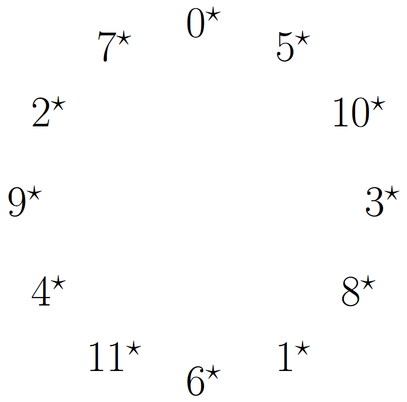

In order to read changes in real time, you need to get fast at being able to read chord symbols, what helps is that each time you go through a song you remember the changes better and better.
Improvising over a tune is the ability to express yourself through musical ideas over the harmonic backdrop of the changes. In order to be fully aware of the changes you need to be able to read them in real time.
Comping stands for accompanying, and accompaniment entails you laying out the harmonic information while someone else uses that.
Comping is a type of improvisation where you play at least two notes at once, you focus on representing the chord changes, and you interact with someone else who is soloing.
When you practice you should have some sort of warm up, an improvement phase, and at the end an analysis phase. You will also need to force yourself out of your comfort zone by doing things which are difficult to you.
To substitute one chord for another you need to consider how similar they are on two levels, on the level of how many anchor intervals they share, and also if their quality is the same, by using these two ideas we can generate chords which can be used in place of another chord.
The circle of fourths represents many important ideas in one place. The first and most important idea is the importance of the fourth or fifth, that is moving by 5 or moving by 7 steps. Firstly this is important because these intervals are the most stable when played against the root, when chords are played with their roots moving by 5 or 7 steps it sounds nice, also that when added repeatedly they are able to generate all the numbers from 0 to 11 in our system.
The instruments tuning is embedded in the circle of fifths, the circle of fifths can be used to generate musical ideas that are intervallic in nature by moving around the circle. Major and minor scales are embedded within it.
After discussing the previous topics, progression will come in a few forms, the first is in the tempo that you play, intially it might be quite slow, but as each individual component improves your tempo will increase along with it.
Progression of your skill really comes from the individual components that make up your playing, for example being able to comp along with a song at 120bpm means that you're albe to convert the chords into ais quickly and that you're comfortable enough with the fretboard to get multiple notes on it at once before the next chord comes up.
By improving each one of these smaller skills we can directly improve the overall playing. To do that I've built web applications for many of the concepts so use them to practice when you don't have a guitar available or just want to focus on the ideas independently of the instrument.
The stave allows us to notate notes over time (Notice it's a 0* major scale)
---9*
7*
--------------------------------------------------------------------------------5*---------------
4*
----------------------------------------------------------------2*-------------------------------
0*
------------------------------------------------11*----------------------------------------------
9*
--------------------------------7*---------------------------------------------------------------
5*
----------------4*-------------------------------------------------------------------------------
2*
0*--
The way we specify a note is by drawing a filled circle on the stave like this
-------------------------------------------------------------------------------------------------
-------------------------------------------------------------------------------------------------
-------------------------------------------------------------------------------------------------
--------xxxxx------------------------------------------------------------------------------------
xxxxxxx
--------xxxxx------------------------------------------------------------------------------------
This note is a 5*.
We can modify which notes that the stave represents by using key signatures where the "b" means lower by one and the "#" symbol means raise by one, like this:
---9*
7*
------------------------------------------------------------------------------------5*---------------
b 3*
--------------------------------------------------------------------2*-------------------------------
0*
b---------------------------------------------------10*----------------------------------------------
9*
------------------------------------7*---------------------------------------------------------------
5*
--------------------3*-------------------------------------------------------------------------------
2*
----0*--
Notice that this represents 10* major.
Since we don't use notes as much as we do anchor intervals, we can create an anchored stave, to start let's take a normal stave representing the notes in 4* major:
---9*
# 8*
#-----------------------------------------------------------------------------------6*---------------
4*
----------#---------------------------------------------------------3*-------------------------------
# 1*
----------------------------------------------------11*----------------------------------------------
9*
------------------------------------8*---------------------------------------------------------------
6*
--------------------4*-------------------------------------------------------------------------------
3*
----1*--
If we're playing in the key of 4* major, then we would probably set our anchor note as 4*, and therefore we can "anchor" this stave:
---5
# 4
#-----------------------------------------------------------------------------------2----------------
0
----------#---------------------------------------------------------11-------------------------------
# 9
----------------------------------------------------7------------------------------------------------
5
------------------------------------4----------------------------------------------------------------
2
--------------------0--------------------------------------------------------------------------------
11
----9---
With every major and minor key we can get a key signature which represents it on the stave, but how do we know which notes to sharpen or flatten?
After some deliberation, we came up with the following method. Look at a key signature the number of sharps that appear is the number of times we've rotated counter clockwise in the circle of fourths, so assuming there were 3 sharps, then the scale is is (0*, 7*,) 2* major. If there were five flats, then on the contrary we rotate clockwise five times around the circle to get our scale (0*, 5*, 10*, 3*) 8*
When there is a shift in the harmonic backdrop which is a signficant change, sometimes it's useful to change anchor note.
If we're playing and this occurs, then the anchor interval we are currently thinking changes like so: given the original anchor note O*, and the new anchor note N*, and an anchor interval X measured against O*, then when we change anchor note to A*, X gets modified from X to X - I(O*, N*).
Composing is improvising with a time restraint, that is you have all the time you want to come up with musical ideas.
By composing your improvisation with get strengthened and your ability to manipulate the harmonic background will also improve.